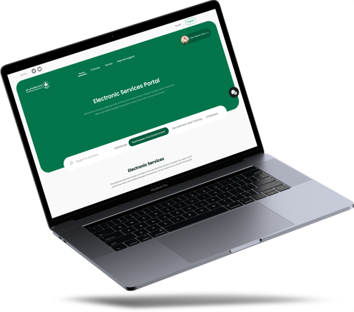

electronic services
The Electronic Services System provides all the services that citizens in Riyadh city need, which saves time, effort, and traditional paper transactions. All you have to do is choose the service.
All Services

Interact with
We always strive to provide the best solutions for citizens and residents of Riyadh city. This is achieved through the participation of the local community in our surveys, which helps improve the quality of services provided.